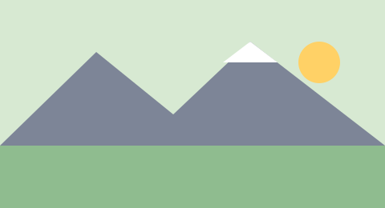

Gita sociale al Pizzo Fittizio

Il percorso è illustrato nella figura 1 qui sopra. Ritrovo alle 7.00 alla fermata Piazza Grande.

Il percorso è illustrato nella figura 1 qui sopra. Ritrovo alle 7.00 alla fermata Piazza Grande.